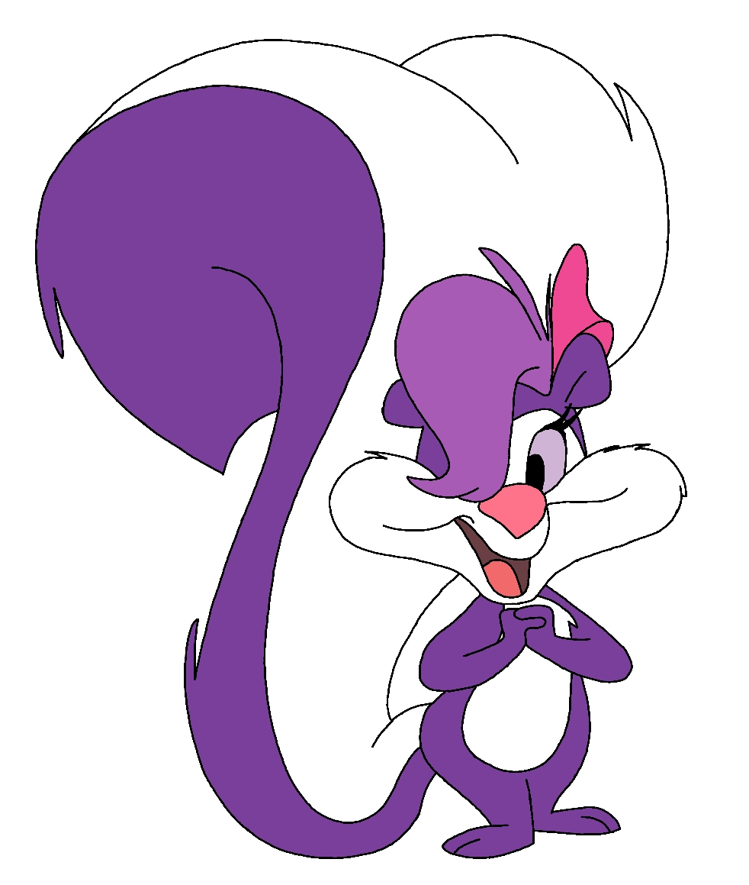
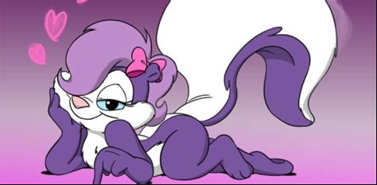

About Fifi LaFume
Fifi LaFume is a character from the TV series Tiny Toon Adventures. The cast of Tiny Toon Adventures are the students of Acme Looniversity, who study as protégés of the classic Looney Tunes characters. Fifi LaFume is the protégé of Pepé LePew.

She likes you. Wanna be her boyfriend?
Fifi's Characteristics
- She is a purple skunk with a white torso and a white stripe down her back and tail.
- Fifi speaks with a very strong French accent.
- She is known to persue potential boyfriends very persistently.
- She has a long fluffy tail which she uses to deliver her powerful skunkly essence.
- She has wavy lavender hair that curls down over her forehed and she usually has a pink hair bow behind one of her ears.
- Fifi usually goes ‘au naturel’ but she wears a dress in a few episodes.
- Fifi seems to live in a junkyard, where she takes shelter in the back seat of a broken down car. And apparently, she has land line phone service there!
- In Tiny Toon Adventures Magazine (which is essentially the TTA comic book) Fifi writes an advice column where she answers letters from both fictional and actual fans about love and relationships.
Fifi's Friends
List of Fifi's friends is below